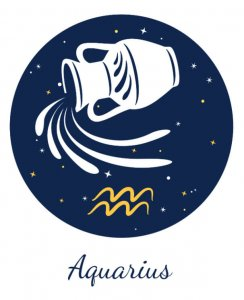

←
GEMINI AND AQUARIUS COMPATIBILITY

-

Gemini and Aquarius Nature and Nuances:
Communication :
Pros of the Gemini Aquarius Relationship:
Both Gemini and Aquarius are air signs. This is why there are multiple similarities between these two individuals. They will connect to each other on a far deeper level than usual and the thoughts, ideas and conversations between them will flow effortlessly.
When these two individuals decide to do achieve something together, they will put their heart and soul into executing their plans. The impetus required at the inception will be provided by the Gemini, whereas the dedication to stick it through will come from the water-bearer. That's how perfect this couple is: one completes the other in an almost ideal sense!
Cons of the Gemini Aquarius Relationship:
Both these signs tend to avoid getting bogged down by emotions and while that might be acceptable in a practical sense, it will lead to a sense of detachment within the relationship. Hence, it is important for Gemini man and Aquarius woman and vice-versa to try and find a way to express their feelings about anything and everything to each other in the most natural way. It is important for a relationship to thrive on both physical as well as psychological intimacy.
Hence, the water-bearer must trust his/her partner slowly to open up in the relationship over time. Gemini, on the other hand, should contain his/her extreme moods as eccentric behavior has much as possible. This will encourage the Aquarian to take down the emotional walls so as to let his/her partner in.
Love :
Gemini is a sign that requires the freedom to express itself through every situation in life. Those ruled by this sign can easily get bored and thus need a partner who can keep them on their toes. This is why they have a real chance to form a perfect chemistry with the unpredictable and mysterious Aquarius.
Aquarius, on the other hand, needs someone who can understand their drive and passion to bring change into the society. Gemini sun sign native is the ideal candidate as the Aquarian's partner in this case, and will never make their partner feel caged or repressed.
The sharp intellect of both these signs draws them towards each other and the complexity of their personalities helps sustain the high level of excitement in the relationship.
Compatibility:
The third sign on the chart, Gemini, is represented by the Twins, Castor and Pullox. This symbol, in itself, is the very crux of the Gemini personality, which has two very different heads. You can never know which head will rear in what situation. These charming, witty and highly versatile individuals form the most vibrant and vivacious lot of the zodiac.
Aquarius is the second last sign of the astrology zodiac and is known for its progressive thought process. Those born under this sun sign are sharp, focused and determined. The water-bearer is a real sucker for intellectual conversations and poignant discussions. They know how to achieve the highest of heights in their chosen field and once they set their mind to accomplish something, they are prone to get to it more often than not.
- Both Gemini and Aquarius are air signs. This is why there are multiple similarities between these two individuals. They will connect to each other on a far deeper level than usual and the thoughts, ideas and conversations between them will flow effortlessly.
When these two individuals decide to do achieve something together, they will put their heart and soul into executing their plans. The impetus required at the inception will be provided by the Gemini, whereas the dedication to stick it through will come from the water-bearer. That's how perfect this couple is: one completes the other in an almost ideal sense!
- Both these signs tend to avoid getting bogged down by emotions and while that might be acceptable in a practical sense, it will lead to a sense of detachment within the relationship. Hence, it is important for Gemini man and Aquarius woman and vice-versa to try and find a way to express their feelings about anything and everything to each other in the most natural way. It is important for a relationship to thrive on both physical as well as psychological intimacy.
Hence, the water-bearer must trust his/her partner slowly to open up in the relationship over time. Gemini, on the other hand, should contain his/her extreme moods as eccentric behavior has much as possible. This will encourage the Aquarian to take down the emotional walls so as to let his/her partner in.
- Aquarius, on the other hand, needs someone who can understand their drive and passion to bring change into the society. Gemini sun sign native is the ideal candidate as the Aquarian's partner in this case, and will never make their partner feel caged or repressed.
The sharp intellect of both these signs draws them towards each other and the complexity of their personalities helps sustain the high level of excitement in the relationship.